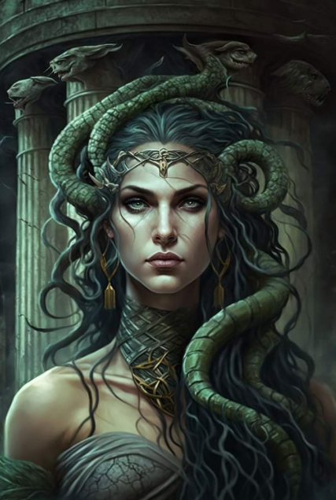

The Story of Hercules
Hercules, known as the greatest of Greek heroes, was the son of Zeus and Alcmene. From birth, he faced immense challenges, many of which were set by his stepmother, Hera, who despised him. Hera's jealousy led her to make Hercules' life difficult, including sending serpents to kill him when he was a baby—yet Hercules strangled them with his bare hands.
As an adult, Hercules was tasked with completing the Twelve Labors, a series of impossible tasks meant to prove his strength and courage. These labors included slaying the Nemean Lion, capturing the Golden Hind of Artemis, and retrieving the Erymanthian Boar. Despite the overwhelming odds, Hercules triumphed over each challenge through determination and immense strength.
However, his life was not without tragedy. Driven mad by Hera, he killed his wife and children, which led him to seek redemption by performing the Twelve Labors. After years of heroism, he died in a tragic accident, but was granted immortality on Mount Olympus, where he was honored as a god.

The Story of Medusa
Medusa, once a beautiful woman, was transformed into a monster as punishment by the goddess Athena. She had been a priestess in Athena's temple, sworn to remain celibate. However, Poseidon, the god of the sea, violated Medusa in Athena's temple. Furious at this act of desecration, Athena punished Medusa by changing her into a hideous creature with snakes for hair. Anyone who gazed into her eyes would turn to stone.
Medusa lived in isolation, hiding away from the world. Over time, she became a symbol of fear, her image used to ward off evil. One day, the hero Perseus was sent to slay Medusa as part of a dangerous mission. With the help of the gods, Perseus used a polished shield to view Medusa's reflection and avoid being turned to stone. He successfully beheaded her and used her head as a weapon against his enemies, including the titan Atlas.
In her death, Medusa’s legacy continued as her head was kept as a powerful talisman, capable of turning anyone who gazed upon it into stone.
The Story of Persephone and Hades
Persephone, the beautiful daughter of Demeter, goddess of the harvest, lived a peaceful life. However, her life was forever changed when Hades, the god of the Underworld, saw her while she was picking flowers in a meadow. Overcome by desire, Hades abducted Persephone and took her to the Underworld to be his queen.
Demeter, devastated by the loss of her daughter, refused to let the earth produce crops, leading to a harsh and barren winter. The gods, seeing the devastation, intervened, and a compromise was reached. Persephone was allowed to return to her mother for part of the year, but because she had eaten six pomegranate seeds in the Underworld, she was bound to spend six months of each year with Hades.
Thus, Persephone became the queen of the Underworld, and her story is symbolic of the changing seasons. Her time with Hades marks the colder months, while her return to Demeter brings the warmth of spring and summer, symbolizing rebirth and renewal.